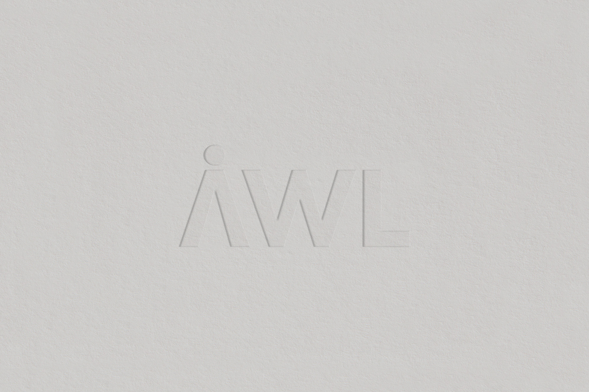
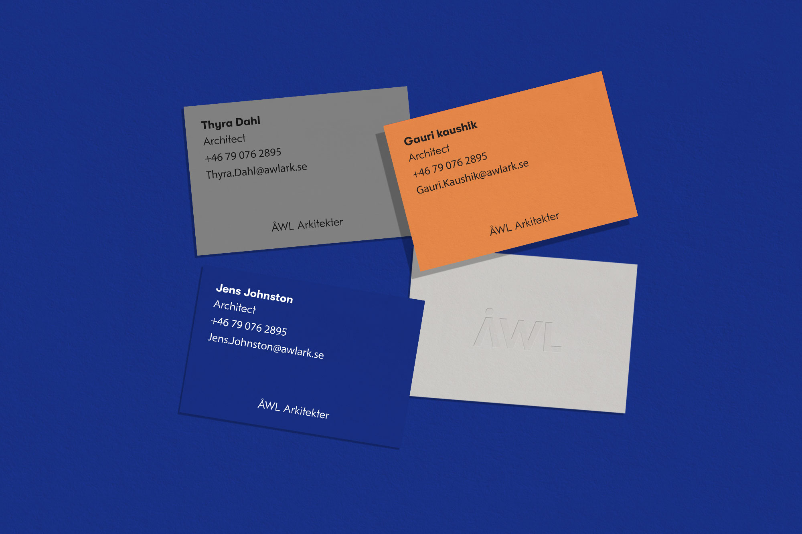

Deliverables
Branding
Project
When ÅWL buttons their shirt they have buttoned all the way up except for the last
representing their casual yet professional tone. They used to wear only black and white
shirts, but lo and and behold, they have started to dress in colors. Why?
Because
they were surrounded by friends and foes that only dressed in black and white and they
didn't
want to be like everybody else. Who wants to be like everybody else?
ÅWL:s new brand identity challenges the common black and white aesthetic, minimalistic and
rigid tone for architecture.


Move your mouse
<-
->